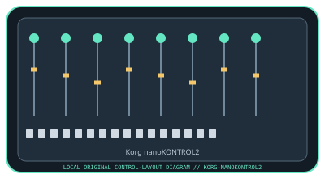

[ SPECIALIZED INPUT CONTROLLERS // IDENTIFIED COMPONENT ]
Korg nanoKONTROL2
USB MIDI DAW mixer with eight compact channel strips and dedicated transport controls.

MODEL IDENTIFICATION: nanoKONTROL2 (model family: nanoSERIES2). Confirm the full label, revision, region, included accessories, and software generation against the physical unit before use.
Model specifications
| Catalog leaf | Specialized input controllers |
|---|---|
| Exact model / identifier | nanoKONTROL2 (model family: nanoSERIES2) |
| Control inputs / sensors | Eight channel faders, eight rotary knobs, 24 channel buttons (three per strip), and transport/track buttons. Faders/knobs report continuous MIDI control values; buttons send discrete MIDI events. |
| Connection / protocol | USB Mini-B connection and USB bus power; USB-MIDI device. Does not carry audio. Class-compliant operation is available on supported hosts; Windows configurations may require the Korg USB-MIDI driver depending on OS and device setup. |
| Driver, software, and host compatibility | KORG KONTROL Editor stores control assignments; compatible DAWs provide MIDI mapping or control-surface support. Check Korg’s current nanoKONTROL2 download page for the applicable driver/editor and OS limits. |
| Setup / calibration | Connect the USB Mini-B cable, select nanoKONTROL2 as a MIDI input in the DAW, then load a matching control-surface template or map controls. Use KORG KONTROL Editor for assignment edits and verify each fader, knob, and transport command. It has no physical sensor calibration routine. |
Safety and preservation
Use the specified USB connection without pulling or twisting the cable. Avoid liquid, grit, and excessive pressure on the slim faders/buttons; disconnect before cleaning and transport it without objects pressing on the controls.
Record observed condition, host OS, application/driver version, firmware, accessories, and test conditions separately from manufacturer claims.
Primary manufacturer sources
- Korg nanoKONTROL2 product specificationsManufacturer product page with control layout and connection details.
- Korg nanoKONTROL2 downloads and supportManufacturer downloads for manuals, KONTROL Editor, and applicable USB-MIDI software.
Specifications and software support can change by revision and host OS. Verify the exact unit and applicable manual before service or deployment.